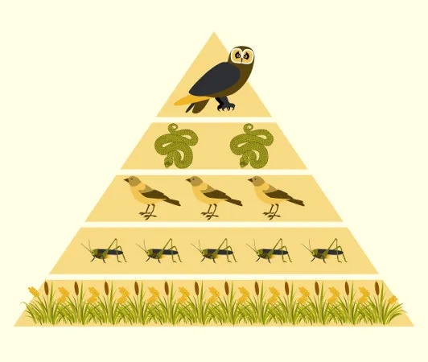
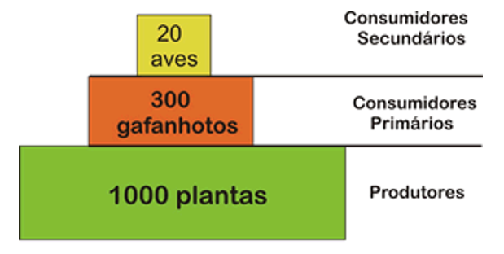
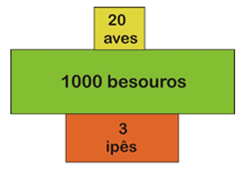
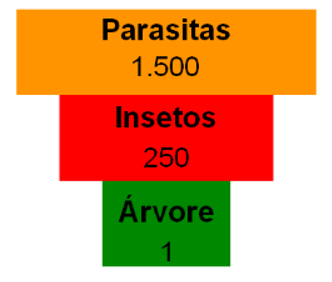
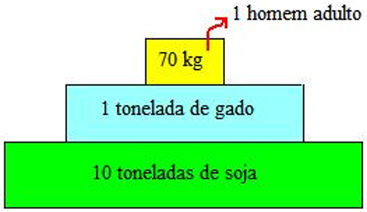
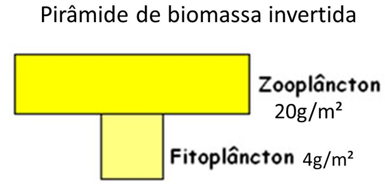
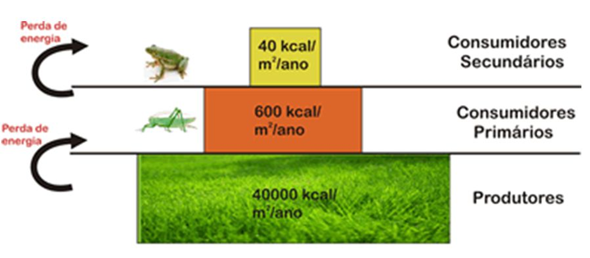

Pirâmides Ecológicas
O fluxo de energia num ecossistema pode representado sob a forma de pirâmides ecológicas (alimentares). Cada nível da pirâmide é representado por um retângulo, cujo comprimento é proporcional à quantidade de energia acumulada.
A pirâmide alimentar representa quantitativamente a cadeia alimentar. Pode ser de número, biomassa ou de energia. A quantidade de energia disponível em cada nível trófico de uma cadeia alimentar pode ser representada por gráficos em forma de pirâmide.
A pirâmide tem sempre a forma de um triângulo com a ponta voltada para cima, por motivo de perdas de energia na passagem de um nível para outro, devido ao fato de que cada organismo também consome parte da energia.

Pirâmide de Números
Indica a quantidade de organismos numa cadeia.
A seguir, vemos que 1.000 plantinhas são necessárias para alimentar 300 gafanhotos, que por sua vez alimentam 20 aves. Uma pirâmide de números tem o inconveniente de igualar os organismos sem levar em conta seu tamanho e sem representar adequadamente a quantidade de matéria orgânica existente nos diversos níveis.

Em alguns casos, quando o produtor é uma planta de grande porte, o gráfico de números passa a ter uma conformação diferente da usual, sendo denominado "pirâmide invertida".

Outro exemplo de pirâmide invertida é dada quando a pirâmide envolve parasitas, sendo assim os últimos níveis tróficos mais numerosos.

Pirâmide de Biomassa
É construída pela avaliação das biomassas nos vários níveis tróficos de uma cadeia.
Veja o exemplo da figura seguinte, que representa as biomassas dos diversos níveis tróficos de uma cadeia, como vimos no item anterior. Nessa figura estão representadas as biomassas dos diversos níveis tróficos de um campo abandonado.
O inconveniente da pirâmide de biomassa é que ela não leva em conta o fator tempo, apenas representa a massa biológica num dado instante, não acusando, portanto, a velocidade com que a matéria orgânica é produzida.

Às vezes a pirâmide de biomassa apresenta- se invertida, como pode
ocorrer nos oceanos e nos lagos.
Nesses casos, os produtores
são representados por algas microscópicas com ciclo de vida curto
e rápido aproveitamento pelo zooplâncton. A pirâmide é, então
invertida entre esses níveis tróficos.
Deve-se lembrar, entretanto, que a medida de biomassa é feita para um determinado instante e que se medíssemos a produtividade, que leva em conta o tempo, a pirâmide seria bem mais larga na base.
Pirâmide de Biomassa Invertida
Metabolismo acelerado = reprodução acelerada!

Pirâmide de Energia
Representa a quantidade de energia existente em cada nível trófico de uma cadeia alimentar.
A pirâmide de energia é sempre normal, ou seja, com a base larga e o topo estreito, porque a energia diminui à medida que se sobe na cadeia alimentar.
